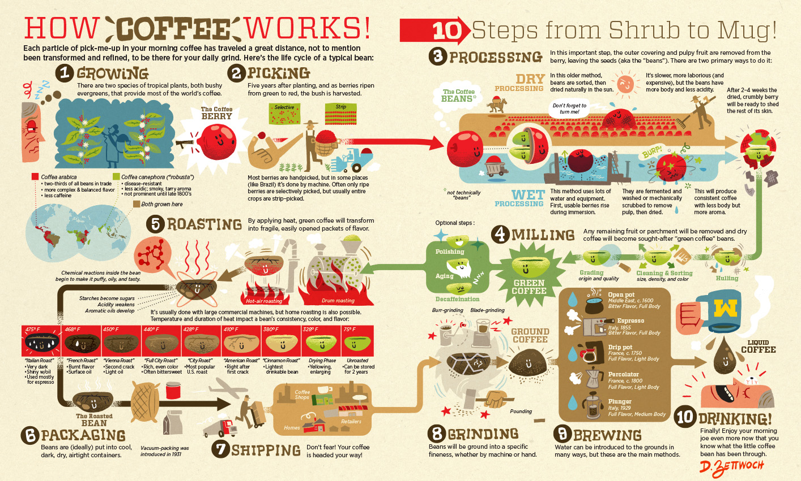

Coffee process
With the aim to bring you the most flavored cups of coffee, we have strict quality control protocol in every single step from choosing types of coffee cherries to brewing.
- We come to Dalak, located in the Central Highlands full of sunshine and wind in Vietnam, to search for fresh coffee cherries ideal for our coffee.
- After picked, the coffee beans are dried for 2 to 4 weeks. Then, the outer skins are ready to be removed.
- The beans are cleaned with fresh water and sorted.
- The beans are then roasted.
- They are then packed and transported to our door.
- Here, they are ground to extract the true flavors.
- The ground coffee is brewed perfectly either manually or with machine.
- The coffee is ready to serve to you.